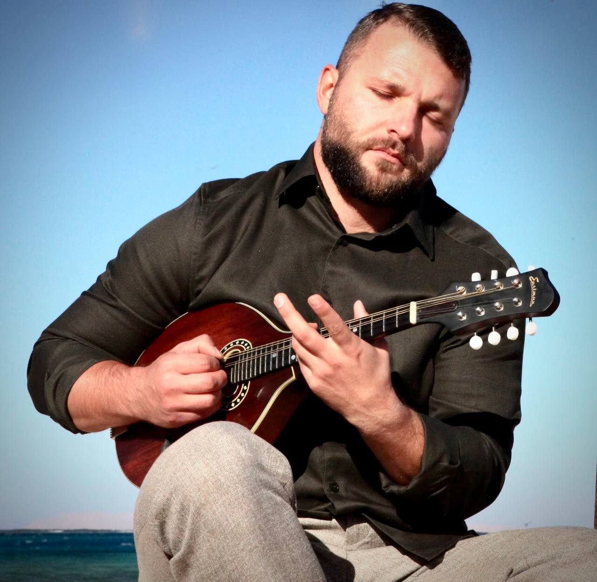
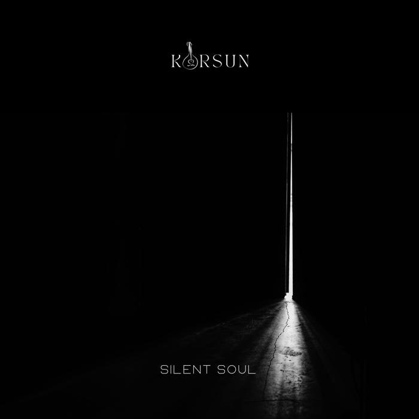
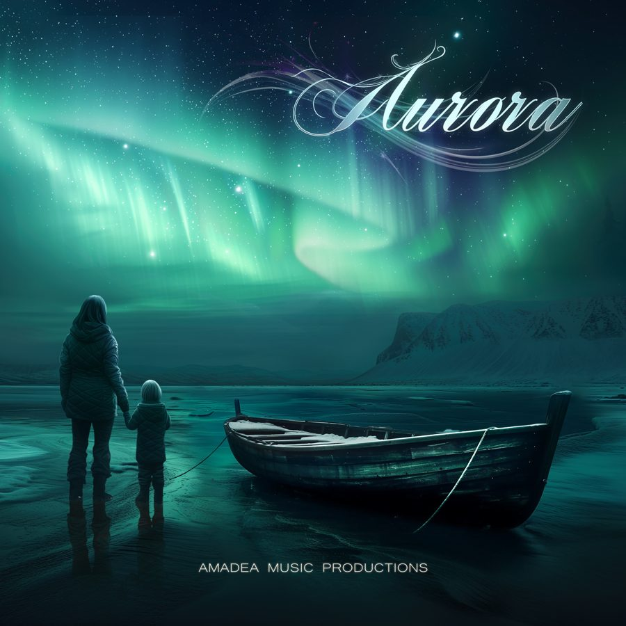
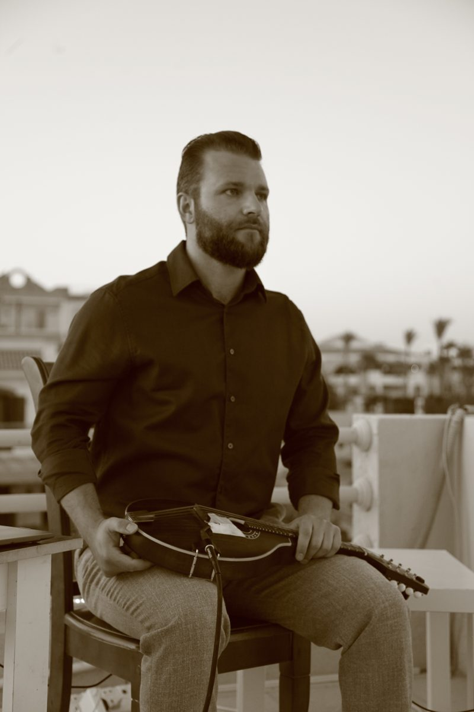
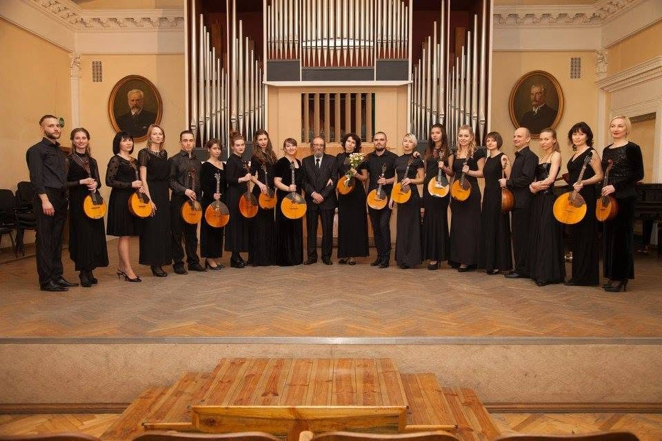
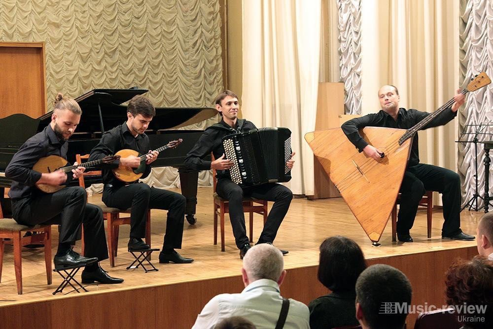
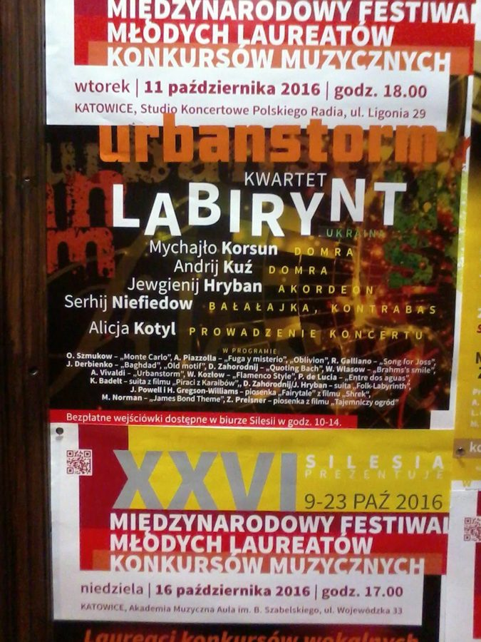
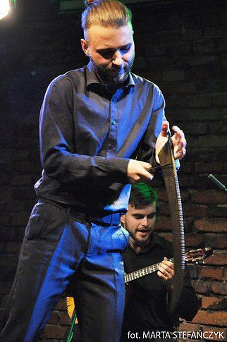
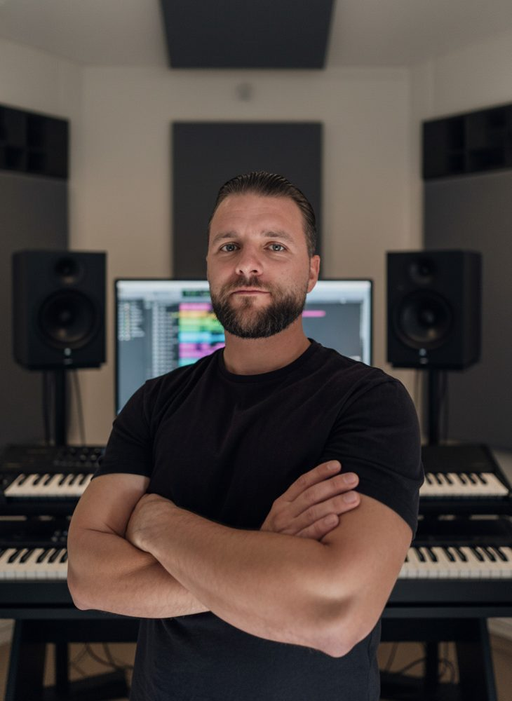
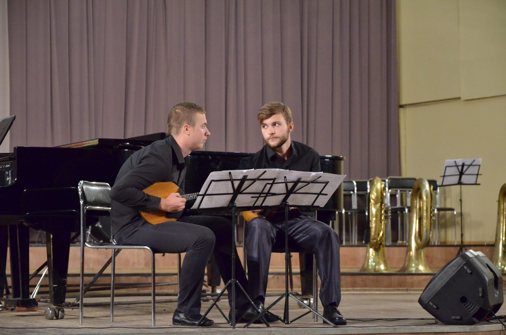

Film, TV & trailers
A score that follows the picture and the people in it.
- Themes and full underscore
- Spotting to picture, sync to cut
- Trailer and library tracks with alt versions
- Stems, cue sheets, mix-ready delivery
Emotional scores for film, games and trailers, orchestration for any ensemble, and new music for mandolin, written by a player who has lived on the concert stage for twenty years.

Trailer and library albums, scores for film and games, and my own releases as an artist.

Eight pieces recorded entirely on mandolin, layer by layer and mostly in first takes. Out on all platforms.

Composer for the trailer and media library since 2020. Albums licensed for film, TV and advertising.
Solo pieces built on loops: one instrument, layered phrase by phrase into calm, sunlit music.
Stand-alone pieces released under the KORSUN name.
Original scores for private film commissions since 2023: themes, underscore and final mix to picture.
Menu themes and adaptive loops built from stems, written for independent game studios.
Published by Amadea Music Productions, and writing for Atom Music Audio since 2023.
A few short pieces from the portfolio. The full portfolio of orchestrations, game and film music is on Google Drive.
From the first sketch to the final stems. Remote collaboration worldwide, in English, Russian and Ukrainian.
A score that follows the picture and the people in it.
Music that loops without wearing out and lifts the right moment.
From a piano sketch or MIDI to a score players can open and play.
Music for mandolin from someone who plays it. For soloists, quartets and mandolin orchestras.

Mike Korsun is a composer, orchestrator and mandolinist. His music lives between the concert hall and the screen: written with the instincts of a performer and the craft of an orchestrator.
He started music in 2001, studied folk instruments at the Ivan Karabits Music College and graduated from the Tchaikovsky National Music Academy of Ukraine in Kyiv with a Bachelor of Musical Arts. Between 2010 and 2018 he became a laureate of more than 25 international competitions and festivals.
For years he played as a soloist with the chamber orchestra “Lik Domer”, the Academy’s folk instruments orchestra and the orchestra of the Glier Kyiv Municipal Academy of Music. He toured Poland with the quartet “Labyrinth”, played a big Kyiv concert with “Sharovaroband” and performed on a national New Year’s Eve TV broadcast. More than 300 concerts taught him how an audience reacts in the first eight bars. That is what he writes for.
Since 2018 he has written music for films, games and media. Since 2020 his trailer music has been published by Amadea Music Productions, including the albums “Quantum” and “Aurora”. As the artist KORSUN he released the EP “Melodies of the Red Sea”, the singles “From the Depths” and “Flight to the Future”, and in 2026 the album “Silent Soul”, recorded entirely on mandolin.
Today he works with directors, game studios, producers and ensembles around the world, and teaches at his own online school, KORSUN Music School.






Tell me about your project. A short brief is enough to start, and the first sketch follows within days.
I reply within one working day.